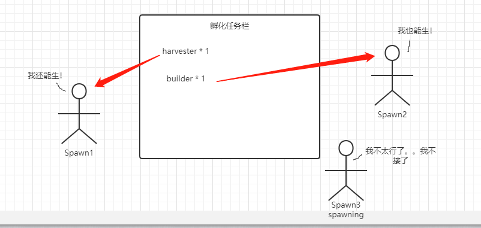
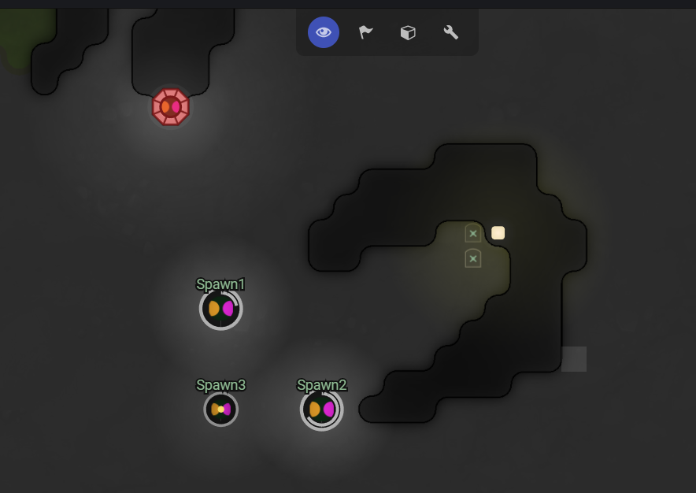

[screeps]room孵化队列的设计
在房间Coltroller等级达到7级和8级的时候，每个房间将解锁第二个/第三个Spawn，这时候就要考虑代码怎么能多兵营(spawn)同时造兵，而不是让spawn成为一个巨大的Extension

孵化任务列表
设想有一个孵化任务列表，来让spawn们自己来认领自己的孵化任务，当spawn可以孵化时，那我就领下这个任务。当spawn正在孵化时，那就不领。 现在要考虑的问题就是:
- 生成孵化任务列表
- spawn认领任务
生成孵化任务列表
在教程中，教给我们的是，使用数量来判断是否需要孵化更多的role，我也没有研究出更好的方法，也是用数量判断。
设定一个limit值表示房间内规划的数量，例如limit = 2,那当我在房间内数creep数小于limit值时，就要向孵化列表中push孵化任务了。
接下来的问题时那这个房间内数量的值，怎么获取呢？
使用memory存储，在孵化creep时除了role还定义了1个额外的值room 来标识这个creep出生的房间。
循环Game.creeps时,就能从memory中获得各个room中的role数量了
但这样还不够，有可能出现这种情况无法完成全部孵化任务
1.energy不够，spawn无法完成孵化任务
2.spawn在孵化中无法完成孵化任务
那在本tick结束后，队列中的指标还是没有完成，下一tick就会继续push孵化任务。
所以在计算数量的时候，还要算上queue中预孵化的这一部分creep
spawn认领任务
在创建好孵化任务列表后，认领任务就简单多了，只要循环Game.spawns判断spawnCreep的返回值，如果成功，那就删除第一个任务就好了。
有一点要注意的是，教程里为creep命名时，用的时Game.time，但实际上，有可能是同一tick时多个spawn一起孵化，而creep的名字不能重复，就要给creep一个绝对不能重复的名字。
我翻了下lodash文档，还真有_.uniqueId([prefix=''])

这样设计，spawn孵化资源就能利用上了，附几个代码参考
- 数量检测Env.js
module.exports = function () {
// 清除死去creep的memory
const creepsName = Object.keys(Game.creeps)
Object.keys(Memory.creeps).forEach(name => {
if (!creepsName.includes(name)) {
delete Memory.creeps[name]
}
})
// 统计每个房间creeps数
global.roomCreeps = {}
Object.values(Game.creeps).forEach(creep => {
const { room, role } = creep.memory
if (!global.roomCreeps[room]) {
global.roomCreeps[room] = {
[role]: 1
}
} else if (!global.roomCreeps[room][role]) {
global.roomCreeps[room][role] = 1
} else {
global.roomCreeps[room][role]++
}
})
}
- room控制器
module.exports = function (room) {
roomSpawnCreeps(room)
}
/**
* 检查creep数量 room数+queue数
*/
function roomSpawnCreeps(room) {
const { harvester = 0 } = global.roomCreeps[room.name] || {}
const queue = room.memory.queue || []
const queueNum = {}
queue.forEach(role => {
queueNum[role]
? queueNum[role]++
: queueNum[role] = 1
})
if (harvester + (queueNum['harvester'] || 0) < 2) {
queue.push('harvester')
}
room.memory.queue = queue
}
- spawn控制器
module.exports = function (spawn) {
getSpawnFromQueue(spawn)
}
// 从队列种选取孵化任务，领取后，shift掉
function getSpawnFromQueue(spawn) {
const queue = spawn.room.memory.queue
// 是否可以孵化？
if (queue.length > 0 && !spawn.spawning) {
const role = queue[0] // 孵化队列第一位
const bodys = getBodys(role)
const result = bodys && spawn.spawnCreep(bodys, _.uniqueId('harvester_'), {
memory: {
role: 'harvester',
room: spawn.room.name
}
})
if (result === OK) {
queue.shift()
spawn.room.memory.queue = queue
}
}
}
function getBodys(role) {
if (role === 'harvester') {
return [WORK, MOVE, CARRY]
}
}